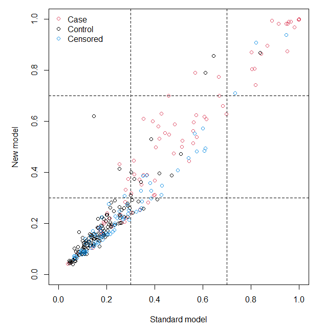

#install.packages("nricens") # 安装R包
library(nricens)
library(survival)
# 只使用部分数据
dat <- pbc[1:312,]
dat <- dat[dat$time > 2000 | (dat$time < 2000 & dat$status == 2), ]
str(dat) # 数据长这样
## 'data.frame': 232 obs. of 20 variables:
## $ id : int 1 2 3 4 6 8 9 10 11 12 ...
## $ time : int 400 4500 1012 1925 2503 2466 2400 51 3762 304 ...
## $ status : int 2 0 2 2 2 2 2 2 2 2 ...
## $ trt : int 1 1 1 1 2 2 1 2 2 2 ...
## $ age : num 58.8 56.4 70.1 54.7 66.3 ...
## $ sex : Factor w/ 2 levels "m","f": 2 2 1 2 2 2 2 2 2 2 ...
## $ ascites : int 1 0 0 0 0 0 0 1 0 0 ...
## $ hepato : int 1 1 0 1 1 0 0 0 1 0 ...
## $ spiders : int 1 1 0 1 0 0 1 1 1 1 ...
## $ edema : num 1 0 0.5 0.5 0 0 0 1 0 0 ...
## $ bili : num 14.5 1.1 1.4 1.8 0.8 0.3 3.2 12.6 1.4 3.6 ...
## $ chol : int 261 302 176 244 248 280 562 200 259 236 ...
## $ albumin : num 2.6 4.14 3.48 2.54 3.98 4 3.08 2.74 4.16 3.52 ...
## $ copper : int 156 54 210 64 50 52 79 140 46 94 ...
## $ alk.phos: num 1718 7395 516 6122 944 ...
## $ ast : num 137.9 113.5 96.1 60.6 93 ...
## $ trig : int 172 88 55 92 63 189 88 143 79 95 ...
## $ platelet: int 190 221 151 183 NA 373 251 302 258 71 ...
## $ protime : num 12.2 10.6 12 10.3 11 11 11 11.5 12 13.6 ...
## $ stage : int 4 3 4 4 3 3 2 4 4 4 ...
dim(dat) # 232 20
## [1] 232 2027 净重分类指数NRI
净重分类指数（net reclassification index，NRI），是用来比较两个模型的分类准确度的，相关概念的解读请参考“临床预测模型的评价”一章。本文主要介绍如何通过R语言计算NRI。
在R语言中有很多包可以计算NRI，但是能同时计算二分类模型和生存模型NRI的只有nricens包，除此之外，PredictABEL可以计算logistic模型的净重分类指数，survNRI可以计算cox模型的净重分类指数。
对于NRI和IDI的计算，以下是常见的R包总结：
| R包 | NRI | IDI | 二分类模型 | 生存模型 | 机器学习模型 |
|---|---|---|---|---|---|
| nricens | 支持 | 不支持 | 支持 | 支持 | 支持 |
| PredictABEL | 支持 | 支持 | 支持 | 不支持 | 支持 |
| survNRI | 支持 | 不支持 | 不支持 | 支持 | 不支持 |
| survIDINRI | 支持 | 支持 | 不支持 | 支持 | 不支持 |
27.1 二分类模型的NRI
27.1.1 nricens
首先我们加载R包和数据。
使用survival包中的pbc数据集用于演示，这是一份关于原发性硬化性胆管炎的数据，其实是一份用于生存分析的数据，是有时间变量的，但是这里我们用于演示分类模型，只要不使用time这一列就可以了。
然后就是准备计算NRI所需要的各个参数。
# 定义结局事件，0是存活，1是死亡
event <- ifelse(dat$time < 2000 & dat$status == 2, 1, 0)
# 两个只由预测变量组成的矩阵
z.std <- as.matrix(subset(dat, select = c(age, bili, albumin)))
z.new <- as.matrix(subset(dat, select = c(age, bili, albumin, protime)))
# 建立2个模型用于比较
mstd <- glm(event ~ age + bili + albumin, family = binomial(),
data = dat, x=TRUE)
mnew <- glm(event ~ age + bili + albumin + protime, family = binomial(),
data = dat, x=TRUE)
# 取出模型预测概率
p.std <- mstd$fitted.values
p.new <- mnew$fitted.values
提示
在建立模型时可以选择任何能够计算概率的模型，并不一定需要是逻辑回归模型，随机森林、支持向量机等机器学习模型也都可以的。
然后就是计算NRI，对于二分类变量，使用nribin()函数，这个函数提供了3种参数使用组合，任选一种都可以计算出来（结果一样），以下3组参数任选1组即可。 - mdl.std和mdl.new - event, z.std, z.new - event, p.std, p.new
我个人更推荐使用第3组参数，只需要提供结局变量和模型的预测概率即可，适用范围更广，其他模型（比如随机森林、支持向量机等）的概率也可以用。
# 这3种方法算出来都是一样的结果
# 两个模型
nribin(mdl.std = mstd, mdl.new = mnew,
cut = c(0.3,0.7),
niter = 500,
updown = 'category')
# 结果变量 + 两个只有预测变量的矩阵
nribin(event = event, z.std = z.std, z.new = z.new,
cut = c(0.3,0.7),
niter = 500,
updown = 'category')
## 结果变量 + 两个模型得到的预测概率
nribin(event = event, p.std = p.std, p.new = p.new,
cut = c(0.3,0.7),
niter = 500,
updown = 'category')其中，cut是判断风险高低的阈值，我们使用了0.3,0.7，代表0-0.3是低风险，0.3-0.7是中风险，0.7-1是高风险，这个阈值是自己设置的，大家根据经验或者文献设置即可。
niter是使用bootstrap法进行重抽样的次数，默认是1000。
updown参数，当设置为category时，表示使用低、中、高风险这种方式；当设置为diff时，此时cut的取值只能设置1个，比如设置0.2，即表示当新模型预测的风险和旧模型相差20%时，认为是重新分类。
上面的代码运行后结果是这样的：
UP and DOWN calculation:
#of total, case, and control subjects at t0: 232 88 144
Reclassification Table for all subjects:
New
Standard < 0.3 < 0.7 >= 0.7
< 0.3 135 4 0
< 0.7 1 31 4
>= 0.7 0 2 55
Reclassification Table for case:
New
Standard < 0.3 < 0.7 >= 0.7
< 0.3 14 0 0
< 0.7 0 18 3
>= 0.7 0 1 52
Reclassification Table for control:
New
Standard < 0.3 < 0.7 >= 0.7
< 0.3 121 4 0
< 0.7 1 13 1
>= 0.7 0 1 3
NRI estimation:
Point estimates:
Estimate
NRI 0.001893939
NRI+ 0.022727273
NRI- -0.020833333
Pr(Up|Case) 0.034090909
Pr(Down|Case) 0.011363636
Pr(Down|Ctrl) 0.013888889
Pr(Up|Ctrl) 0.034722222
Now in bootstrap..
Point & Interval estimates:
Estimate Std.Error Lower Upper
NRI 0.001893939 0.027816095 -0.053995513 0.055354449
NRI+ 0.022727273 0.021564394 -0.019801980 0.065789474
NRI- -0.020833333 0.017312438 -0.058823529 0.007518797
Pr(Up|Case) 0.034090909 0.019007629 0.000000000 0.072164948
Pr(Down|Case) 0.011363636 0.010924271 0.000000000 0.039603960
Pr(Down|Ctrl) 0.013888889 0.009334685 0.000000000 0.035211268
Pr(Up|Ctrl) 0.034722222 0.014716046 0.006993007 0.066176471首先是3个重分类表格，第一个是所有患者的，第2个是case（结局为1）组的，第3个是control（结局为2）组的，有了这3个表格，我们可以根据之前的介绍，自己计算NRI。
case组（n=88）：
重新分对的：3个
重新分错的：1个
净重分类：3-1=2
净重分类的比例是：2/88=0.022727273
control组（n=144）：
重新分对的：2个
重新分错的：5个
净重分类：2-5=-3
净重分类的比例是：-3/144=-0.020833333相加NRI=2/88 + (-3/144) = 0.001893939 绝对NRI=（2-3）/232=-0.000431
这个结果和上面的结果（也就是中间的Point-estimates部分）是完全一样的，而且上面的结果只给出了相加NRI，没有绝对NRI。
最后是做了500次bootstrap后得到的估计值，并且有标准误和可信区间。
最后还会得到一张图：

这张图中的虚线对应的坐标，就是我们在cut中设置的阈值，这张图对应的是上面结果中的第一个重分类表格，反应的是总体的情况，case是结果为1的组，也就是发生结局的组，control是结果为0的组，也就是未发生结局的组。
P值没有直接给出，但是可以自己计算。
# 计算P值
z <- abs(0.001893939/0.027816095)
p <- (1 - pnorm(z))*2
p
## [1] 0.9457157以上是训练集的NRI，那么测试集（验证集，外部验证集）的NRI如何实现呢？很简单，只要拿到测试集（验证集，外部验证集）的概率即可。
我们先随机建立一个测试集（验证集，外部验证集）：
# 取前100行作为测试集，这个方法是不正规的哈
testset <- dat[1:100,]
# 计算测试集的概率
p.std_test <- predict(mstd, newdata = testset,type = "response")
p.new_test <- predict(mnew, newdata = testset,type = "response")然后准备下测试集（验证集，外部验证集）的结果变量，就可以计算NRI了：
event_test <- ifelse(testset$time < 2000 & testset$status == 2, 1, 0)
## 结果变量 + 两个模型得到的预测概率
nribin(event = event_test, p.std = p.std_test, p.new = p.new_test,
cut = c(0.3,0.7),
niter = 500,
updown = 'category')结果就不展示了，结果解读也是和测试集（验证集，外部验证集）完全一样的。
27.1.2 PredictABEL
PredictABEL只能计算二分类模型的NRI，除此之外，它还会自动给出IDI。
#install.packages("PredictABEL") #安装R包
library(PredictABEL)
# 取出模型预测概率，这个包只能用预测概率计算
p.std = mstd$fitted.values
p.new = mnew$fitted.values 然后就是计算NRI：
dat$event <- event
reclassification(data = dat,
cOutcome = 21, # 结果变量在哪一列
predrisk1 = p.std,
predrisk2 = p.new,
cutoff = c(0,0.3,0.7,1)
)
## _________________________________________
##
## Reclassification table
## _________________________________________
##
## Outcome: absent
##
## Updated Model
## Initial Model [0,0.3) [0.3,0.7) [0.7,1] % reclassified
## [0,0.3) 121 4 0 3
## [0.3,0.7) 1 13 1 13
## [0.7,1] 0 1 3 25
##
##
## Outcome: present
##
## Updated Model
## Initial Model [0,0.3) [0.3,0.7) [0.7,1] % reclassified
## [0,0.3) 14 0 0 0
## [0.3,0.7) 0 18 3 14
## [0.7,1] 0 1 52 2
##
##
## Combined Data
##
## Updated Model
## Initial Model [0,0.3) [0.3,0.7) [0.7,1] % reclassified
## [0,0.3) 135 4 0 3
## [0.3,0.7) 1 31 4 14
## [0.7,1] 0 2 55 4
## _________________________________________
##
## NRI(Categorical) [95% CI]: 0.0019 [ -0.0551 - 0.0589 ] ; p-value: 0.94806
## NRI(Continuous) [95% CI]: 0.0391 [ -0.2238 - 0.3021 ] ; p-value: 0.77048
## IDI [95% CI]: 0.0044 [ -0.0037 - 0.0126 ] ; p-value: 0.28396这个结果首先也是3个重分类表格，下面是NRI和IDI，第一行NRI(Categorical)的结果和nricens的结果是一样的，也是相加净重分类指数，也同时给出了P值。最后一行还给出了IDI和P值。
测试集的计算毫无难度，也是只要提供测试集数据以及相应的概率即可，这里就不再重复演示了。
两个包算是各有优劣吧，大家可以自由选择。
27.2 生存模型的NRI
还是使用survival包中的pbc数据集用于演示，这次要构建生存分析模型，因此我们要使用time这一列了。
27.2.1 nricens
加载数据和R包：
rm(list = ls())
library(nricens)
library(survival)
dat <- pbc[1:312,]
dat$status <- ifelse(dat$status==2, 1, 0) # 0表示活着，1表示死亡然后准备所需参数：
# 两个只由预测变量组成的矩阵
z.std <- as.matrix(subset(dat, select = c(age, bili, albumin)))
z.new <- as.matrix(subset(dat, select = c(age, bili, albumin, protime)))
# 建立2个cox模型，建立其他模型也可以，只要能计算概率就行
mstd <- coxph(Surv(time,status) ~ age + bili + albumin, data = dat, x=TRUE)
mnew <- coxph(Surv(time,status) ~ age + bili + albumin + protime, data = dat, x=TRUE)
# 计算在2000天的模型预测的生存概率
p.std <- get.risk.coxph(mstd, t0=2000)
p.new <- get.risk.coxph(mnew, t0=2000)然后就是计算NRI，但是要注意，生存模型的NRI只能选择计算某一个时间点的NRI，比如计算1年的NRI，计算3年的NRI这种。
nricens(mdl.std= mstd, mdl.new = mnew,
t0 = 2000,
cut = c(0.3, 0.7),
niter = 1000,
updown = 'category')
UP and DOWN calculation:
#of total, case, and control subjects at t0: 312 88 144
Reclassification Table for all subjects:
New
Standard < 0.3 < 0.7 >= 0.7
< 0.3 202 7 0
< 0.7 13 53 6
>= 0.7 0 0 31
Reclassification Table for case:
New
Standard < 0.3 < 0.7 >= 0.7
< 0.3 19 3 0
< 0.7 3 32 4
>= 0.7 0 0 27
Reclassification Table for control:
New
Standard < 0.3 < 0.7 >= 0.7
< 0.3 126 3 0
< 0.7 5 7 2
>= 0.7 0 0 1
NRI estimation by KM estimator:
Point estimates:
Estimate
NRI 0.05377635
NRI+ 0.03748660
NRI- 0.01628974
Pr(Up|Case) 0.07708938
Pr(Down|Case) 0.03960278
Pr(Down|Ctrl) 0.04256352
Pr(Up|Ctrl) 0.02627378
Now in bootstrap..
Point & Interval estimates:
Estimate Lower Upper
NRI 0.05377635 -0.082230381 0.16058172
NRI+ 0.03748660 -0.084245197 0.13231776
NRI- 0.01628974 -0.030861213 0.06753616
Pr(Up|Case) 0.07708938 0.000000000 0.19102291
Pr(Down|Case) 0.03960278 0.000000000 0.15236016
Pr(Down|Ctrl) 0.04256352 0.004671535 0.09863170
Pr(Up|Ctrl) 0.02627378 0.006400463 0.05998424
结果的解读以及和分类模型的一模一样，这里就不再重复了。
测试集（验证集，外部验证集）也是只要拿到概率就好了，下面演示下。
首先随机建立一个测试集：
# 取前100行作为测试集，这个方法并不正规哈
testset <- dat[1:100,]
# 获取测试集在2000天时的生存概率
p.std_test <- 1-c((summary(survfit(mstd, newdata=testset), times=2000)$surv))
p.new_test <- 1-c((summary(survfit(mnew, newdata=testset), times=2000)$surv))然后计算NRI即可：
nricens(time = testset$time, event = testset$status,
p.std = p.std_test, p.new = p.new_test,
t0 = 2000,
cut = c(0.3, 0.7),
niter = 1000,
updown = 'category')结果解读是一模一样的，所以就不重复了。
27.2.2 survNRI
survNRI不在CRAN上，可以通过github安装或者下载到本地安装，这个包的作者和rmda的作者是同一个人。
# 安装R包
devtools::install_github("mdbrown/survNRI")加载R包并使用，还是用上面的pbc数据集。
rm(list = ls())
library(survNRI)
library(survival)
# 使用部分数据
dat <- pbc[1:312,]
dat$status <- ifelse(dat$status==2, 1, 0) # 0表示活着，1表示死亡下面就是计算NRI，时间点我们选择2000天，你可以任意选择你感兴趣的时间点。注意这个包计算NRI就不能只提供概率了，所以对于随机生存森林这种机器学习模型就不行了。
res <- survNRI(time = "time", event = "status",
model1 = c("age", "bili", "albumin"), # 模型1的自变量
model2 = c("age", "bili", "albumin", "protime"), # 模型2的自变量
data = dat,
predict.time = 2000, # 预测的时间点
method = "all", # 所有方法都计算
bootMethod = "normal",
bootstraps = 500, # 重抽样次数
alpha = .05)下面是查看结果，这个结果很清晰，给出了5种方法得到的相加NRI，并且以表格的方式呈现。分别给出了死亡组和生存组的NRI以及总的NRI，并且也有可信区间：
print.survNRI(res)
##
## Net Reclassification Improvement at time t = 2000
## with 95% bootstrap confidence intervals based on normal approximation.
##
## method | event NRI non-event NRI NRI
## -------------------------------------------------------------------------------
## KM | 0.204 (-0.034,0.443) 0.319 (0.132,0.710) 0.523 (-0.046,0.888)
## IPW | 0.224 (-0.014,0.463) 0.327 (0.141,0.738) 0.552 (-0.036,0.915)
## SmoothIPW | 0.196 (-0.041,0.434) 0.314 (0.129,0.696) 0.511 (-0.047,0.873)
## SEM | 0.075 (-0.116,0.266) 0.263 (0.084,0.518) 0.338 (-0.047,0.649)
## Combined | 0.196 (-0.041,0.434) 0.314 (0.129,0.696) 0.511 (-0.048,0.873)
## -------------------------------------------------------------------------------这个包在计算可信区间时有两种方法：正态近似法和分位数法，默认正态近似法。
上面给出的5种方法，其实是估计生存概率的方法，并不是计算NRI的方法，NRI的计算方法都是一样的，无非就是相加NRI和绝对NRI。
但是这个函数无法计算测试集（或者叫验证集、外部验证集都可以）的IDI，因为它不支持使用概率，如果你提供测试集的数据给它，也只是在测试集重新拟合模型而已，这样就不是原来的模型了。如果大家知道其他R包，欢迎告诉我。
但是在实际使用时，NRI和IDI都是作为比较最终模型准确性的，所以通常都是只做一遍就可以了，不需要在训练集、验证集各来一遍。